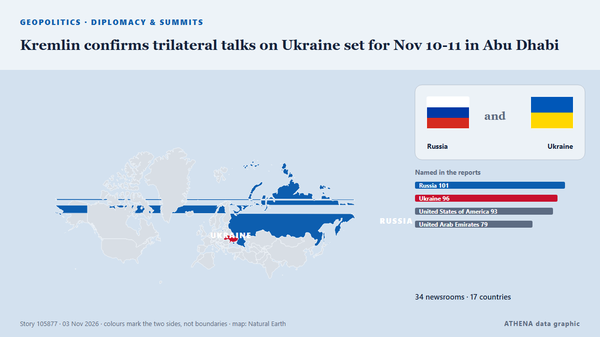

Diplomacia y cumbres
| 22 oct | 0 |
|---|---|
| 23 oct | 0 |
| 24 oct | 0 |
| 25 oct | 1 |
| 26 oct | 0 |
| 27 oct | 0 |
| 28 oct | 2 |
| 29 oct | 0 |
| 30 oct | 4 |
| 31 oct | 4 |
| 1 nov | 3 |
| 2 nov | 4 |
| 3 nov | 6 |
| 4 nov | 0 |
Los titulares se muestran en inglés, tal como se publicaron.

Kremlin confirms trilateral talks on Ukraine set for Nov 10-11 in Abu Dhabi
The United States will bring together delegations from Ukraine and Russia in Abu Dhabi on November 10-11 to discuss ending Russia's conflict with Ukraine, post-conflict security agreements and… de CGTN (World)
EU to host talks on Ukraine with United States and others on Wednesday
BRUSSELS, Nov 3 - The European Commission will host a meeting on Ukraine on Wednesday with representatives of the United States, Ukraine, NATO and European allies, the European Union's executive body… de The Straits Times
Korea, Turkey pledge deeper cooperation on nuclear energy, defense
The leaders of South Korea and Turkey agreed Tuesday to deepen cooperation in nuclear energy and the defense industry while strengthening coordination on peace and stability on the Korean Peninsula… de Korea Herald
Neighbors are Iran's priority, Araghchi says
Iran's Qalibaf says progress only possible when Tehran's seven conditions are met Iran's parliament speaker said on Thursday that Tehran's conditions had been repeatedly and clearly communicated to… de Middle East Eye
US signals progress in talks with Iran to avert renewed war
President Donald Trump said a deal with Tehran 'could happen', as Iran offered to reopen the Strait of Hormuz under strict conditions. de Free Malaysia Today
Iran, Qatari mediators hold third day of talks to end US-Iran war
Iranian negotiators were in Doha on Sunday for a third consecutive day of talks with Qatari mediators aimed at pushing for a deal to end the US-Israeli war on Iran, an official briefed on the… de Business Recorder
Russia arrests minor after US Embassy warns of ‘credible threat of a mass casualty event’ in Moscow
Russia’s Federal Security Service says detainee posted TikTok videos showing object resembling weapon at Moscow museum-reserve. de Anadolu Agency (English)
UN peacekeeping mission in Western Sahara ends after 35 years
Morocco, which claims the Western Sahara as its own, welcomed the decision, while its opponents in the Algeria-backed Polisario Front expressed concern. de Free Malaysia Today
China's foreign minister pushes for dialogue to resolve Middle East conflict
BEIJING, Nov 2 (Reuters) - China's Foreign Minister WangYi said on Monday that all parties in the Middle East conflict should focus on political solutions rather than resorting to arms again, in a… de Al-Monitor
Iranians Have Left Doha Talks, Draft Proposal for US Deal Being Circulated, Official Says
Nov 2 (Reuters) - Iranian negotiators have left talks with Qatari mediators aimed at ending the war with the United States, and a draft proposal is being circulated with a follow-up meeting possible… de Al-Monitor
Trump says Flavio Bolsonaro can stay in US 'as long as he wants'
The former conservative presidential candidate left Brazil after losing the election to leftist incumbent Luiz Inacio Lula da Silva. de Free Malaysia Today
Trump questioned about new Iran strikes: ‘Would I tell you?’
Expectations are growing that the US President will order new strikes against Iran as soon as this week. de Sydney Morning Herald
Turkey Nominates OSCE Chief Feridun Sinirlioglu for UN Secretary-General
Turkey has nominated Feridun Sinirlioglu, head of the Organization for Security and Co-operation in Europe (OSCE), to become the next secretary-general of the United Nations. de Greek Reporter
Erdogan, Zelensky talk Black Sea Grain Corridor
Turkish President Recep Tayyip Erdogan and Ukrainian President Volodymyr Zelensky agreed on Saturday to continue work on the Black Sea Grain Corridor, aimed at enabling grain shipments from Ukraine. de AzerNews
Iranian negotiators in Doha to continue talks to end the US-Iran war, official says
Iranian negotiators were in Doha on Sunday for a third consecutive day of talks with Qatari mediators aimed at pushing for a deal to end the US-Israeli war on Iran, an official briefed on the… de Cyprus Mail
Qatari mediators hold over 12 hours of talks aimed at renewing direct US-Iran negotiations - report
A diplomatic source told Axios that Qatari mediators were in contact with the White House over the course of Friday’s talks and that “there was positive progress" in the effort to reach a deal. de The Jerusalem Post
G20 FM meeting ends without joint communique amid deep divisions
Foreign ministers from the Group of 20 leading economies are gathering in Atlanta on October 30-31 for talks expected to expose continuing divisions among Western governments over Russia's war in… de RFE/RL (English)
Evacuees from Russian-occupied Oleshky reunited with relatives in Ukraine
Russia and Ukraine have not specified how many people chose to leave the city. de The Irish News (Belfast)
Rapper Nicki Minaj joins Trump onstage at Michigan rally
The Super Bass singer is the latest big name to campaign in Michigan, where a tight Senate race is playing out ahead of the 3 November midterms. de BBC News